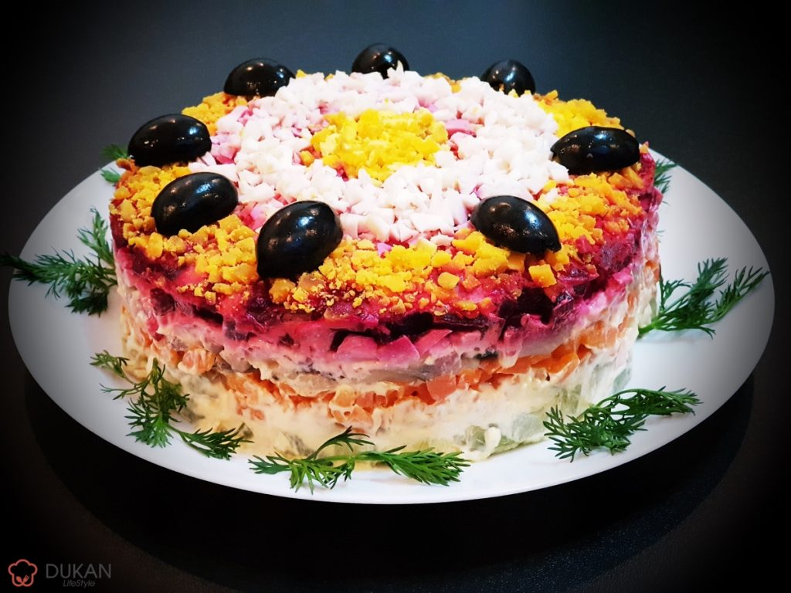
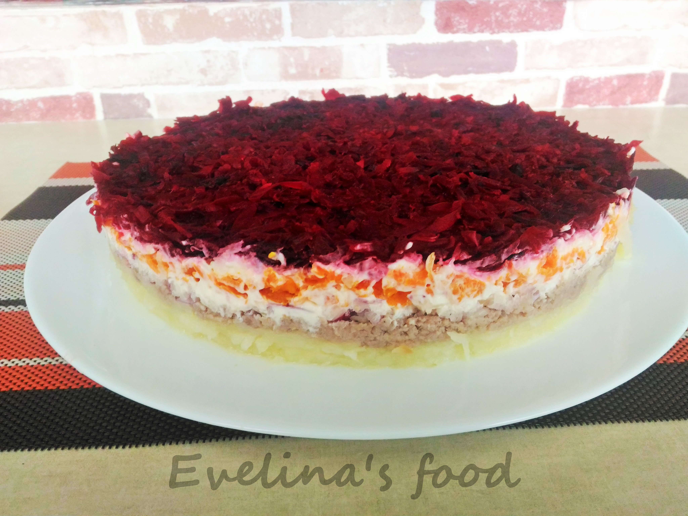

Pentru Șubă avem nevoie de un cerc pentru a aranjamentul salatei. Putem folosi chiar cercul unei tave pentru torturi. Ungem marginile cercului cu ulei. Îl fixăm pe un platou sau pe o farfurie rotundă. Cartofii, 1 sfeclă o dam prin răzătoare. Cealaltă sfeclă mică o fărîmițăm în blender cu 1 lingură de maioneză. Ceapa o tăiem cuburi mărunte. Scrumbia o curățim de oase și piele și o tăiem mărunt. Acum este totul pregătit pentru aranja salata în straturi. Primul strat va fi cartofii dați prin răzătoare. Urmatorul strat va fi ceapa taiată cuburi. Punem deasupra cepei, maioneza proporțional. Adăugăm deasupra maionezei scrumbia tăiată.Punem morcovul dat prin răzătoare, apoi iarăși maioneza.Ultimul strat va fi sfecla roșie dată prin razătoare. Pentru decorul de deasupra vom întinde cu o lingură sfecla dată prin blender.Salata este gata. Scoatem pe sus cercul atent, în așa fel încît sa nu stricăm aspectul salatei. Pentru a decora salata, vom tăia oul în patru părți. Vom pune cele patru părți pe salată. Vom ornamenta salata cu maioneza. Vom pune cîteva stible de pătrunjel sau mărar. La dorință, vom pune sare între straturi.
|  | |  |
|